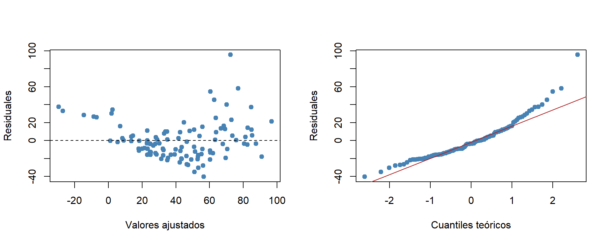
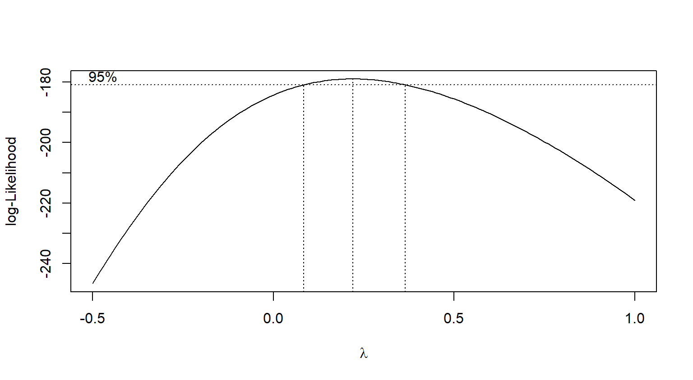

(Intercept) publicidad precio
53.375000 3.375000 -2.791667 Estadística II
Escuela de Matemáticas · Universidad Industrial de Santander
Las ventas dependen de la publicidad, pero también del precio. La temperatura de una pizza depende del tiempo de entrega, pero también del número de pizzas y de la sucursal.
La regresión múltiple permite estudiar el efecto de cada variable manteniendo constantes las demás (Montgomery et al., 2012, p. 4; Walpole et al., 2012, p. 443).
\[ Y = \beta_0 + \beta_1 X_1 + \beta_2 X_2 + \cdots + \beta_k X_k + \varepsilon \]
Interpretación ceteris paribus
\(\beta_j\) es el cambio promedio en \(Y\) por cada unidad de \(X_j\), manteniendo constantes las demás variables. Puede cambiar, incluso de signo, si se agregan o se quitan variables (Montgomery et al., 2012, pp. 119-120).
\[ \mathbf{y} = \mathbf{X}\boldsymbol{\beta} + \boldsymbol{\varepsilon} \]
\[ \underbrace{\begin{pmatrix} y_1 \\ y_2 \\ \vdots \\ y_n \end{pmatrix}}_{\mathbf{y}\ (n \times 1)} = \underbrace{\begin{pmatrix} 1 & x_{11} & \cdots & x_{1k} \\ 1 & x_{21} & \cdots & x_{2k} \\ \vdots & \vdots & & \vdots \\ 1 & x_{n1} & \cdots & x_{nk} \end{pmatrix}}_{\mathbf{X}\ (n \times p)} \underbrace{\begin{pmatrix} \beta_0 \\ \beta_1 \\ \vdots \\ \beta_k \end{pmatrix}}_{\boldsymbol{\beta}\ (p \times 1)} + \underbrace{\begin{pmatrix} \varepsilon_1 \\ \varepsilon_2 \\ \vdots \\ \varepsilon_n \end{pmatrix}}_{\boldsymbol{\varepsilon}\ (n \times 1)} \]
Minimizar \(\ S(\boldsymbol{\beta}) = (\mathbf{y} - \mathbf{X}\boldsymbol{\beta})^{\top}(\mathbf{y} - \mathbf{X}\boldsymbol{\beta})\) (Montgomery et al., 2012, pp. 71-74):
\[ \hat{\boldsymbol{\beta}} = (\mathbf{X}^{\top}\mathbf{X})^{-1}\mathbf{X}^{\top}\mathbf{y} \]
| Publicidad (\(x_1\)) | 2 | 3 | 5 | 4 | 6 | 7 | 8 | 5 |
|---|---|---|---|---|---|---|---|---|
| Precio (\(x_2\)) | 10 | 12 | 11 | 13 | 12 | 14 | 13 | 11 |
| Ventas (\(y\)) | 31 | 29 | 40 | 32 | 39 | 38 | 43 | 42 |
\[ \mathbf{X}^{\top}\mathbf{X} = \begin{pmatrix} 8 & 40 & 96 \\ 40 & 228 & 492 \\ 96 & 492 & 1164 \end{pmatrix}, \quad \mathbf{X}^{\top}\mathbf{y} = \begin{pmatrix} 294 \\ 1531 \\ 3535 \end{pmatrix} \quad\Rightarrow\quad \hat{\boldsymbol{\beta}} = \begin{pmatrix} 53{,}375 \\ 3{,}375 \\ -2{,}792 \end{pmatrix} \]
\[ \hat{y} = 53{,}375 + 3{,}375\,x_1 - 2{,}792\,x_2 \]
Solo con la publicidad, la pendiente es 2,18; en el modelo múltiple, 3,375.
Publicidad y precio están correlacionados (\(r = 0{,}65\)): las tiendas que más invierten venden más caro, y el precio alto reduce las ventas. La regresión simple mezcla los dos efectos.
Omitir una variable importante puede producir signos y magnitudes engañosos (Montgomery et al., 2012, p. 120).
\(\hat{\mathbf{y}} = \mathbf{H}\mathbf{y}\), con la matriz sombrero \(\mathbf{H} = \mathbf{X}(\mathbf{X}^{\top}\mathbf{X})^{-1}\mathbf{X}^{\top}\); residuales \(\mathbf{e} = (\mathbf{I} - \mathbf{H})\mathbf{y}\).
Bajo los supuestos del modelo (Montgomery et al., 2012, pp. 19, 80):
\[ CME = \frac{SCE}{n - k - 1} \qquad R^2 = 1 - \frac{SCE}{STC} \qquad R^2_{\text{aj}} = 1 - (1 - R^2)\,\frac{n - 1}{n - k - 1} \]
Tiendas: \(R^2 = 0{,}934\), \(\ R^2_{\text{aj}} = 0{,}908\), \(\ s^2 = 2{,}633\).
\(H_0: \beta_1 = \cdots = \beta_k = 0\) contra \(H_1\): al menos un \(\beta_j \neq 0\).
| Fuente | SC | gl | CM | \(F\) |
|---|---|---|---|---|
| Regresión | \(SCR\) | \(k\) | \(SCR/k\) | \(CMR/CME\) |
| Error | \(SCE\) | \(n - k - 1\) | \(SCE/(n-k-1)\) | |
| Total | \(STC\) | \(n - 1\) |
Tiendas: \(f_{\text{obs}} = 35{,}38 > f_{0{,}95;\,2,5} = 5{,}79\) → al menos una variable sirve.
\[ T = \frac{\hat{\beta}_j}{s(\hat{\beta}_j)} \sim t(n - k - 1), \qquad s(\hat{\beta}_j) = s\sqrt{c_{jj}} \]
Tiendas: publicidad \(t = 8{,}32\); precio \(t = -4{,}50\). Ambas significativas.
La prueba t es condicional
Evalúa si \(X_j\) aporta dado que las demás están en el modelo. Una prueba t no significativa no implica que \(X_j\) no esté relacionada con \(Y\).
Estimate Std. Error t value Pr(>|t|)
(Intercept) 53.375000 6.3240612 8.439988 0.0003831726
publicidad 3.375000 0.4056887 8.319186 0.0004101206
precio -2.791667 0.6196997 -4.504870 0.0063709032 fit lwr upr
1 36.75 32.32554 41.17446Una variable con \(m\) categorías → \(m - 1\) indicadoras (0 o 1) (Montgomery et al., 2012, pp. 260-262).
¿Por qué no \(m\)? Las \(m\) indicadoras suman 1, igual que la columna del intercepto: \(\mathbf{X}^{\top}\mathbf{X}\) no sería invertible. Es la trampa de las variables ficticias (Montgomery et al., 2012, p. 262).
La indicadora desplaza la recta: mismas pendientes, interceptos distintos (Montgomery et al., 2012, p. 261).
Sucursal Centre como referencia:
\[ \widehat{\text{temp}} = 74{,}56 - 0{,}305\,\text{tiempo} - 0{,}925\,\text{pizzas} + 3{,}75\,x_{\text{East}} + 0{,}92\,x_{\text{West}} \]
¿Aporta la sucursal como un todo? Comparar el modelo completo con el reducido (Montgomery et al., 2012, p. 89):
\[ F = \frac{(SCE_{\text{red}} - SCE_{\text{comp}})/r}{SCE_{\text{comp}}/(n - p)} \]
completo <- lm(temperature ~ time + pizzas + branch, data = pizza)
reducido <- lm(temperature ~ time + pizzas, data = pizza)
anova(reducido, completo)Analysis of Variance Table
Model 1: temperature ~ time + pizzas
Model 2: temperature ~ time + pizzas + branch
Res.Df RSS Df Sum of Sq F Pr(>F)
1 1263 45777
2 1261 43127 2 2650.3 38.746 < 2.2e-16 ***
---
Signif. codes: 0 '***' 0.001 '**' 0.01 '*' 0.05 '.' 0.1 ' ' 1Efectos (Faraway, 2002, p. 118; Montgomery et al., 2012, pp. 288-289):
\[ VIF_j = \frac{1}{1 - R_j^2} \]
\(R_j^2\): de la regresión de \(X_j\) sobre las demás. VIF mayor que 5 o 10 indica problemas (Montgomery et al., 2012, p. 296).
mtcarsmpg con cyl, disp, hp y wt:
wt es significativa; valores p de 0,059, 0,331 y 0,102 para las demás.disp sale con signo positivo (sola, es negativa).Con solo hp y wt: \(R^2_{\text{aj}} = 0{,}815\), ambas significativas, VIF de 1,8.
Las violaciones graves pueden producir un modelo inestable: otra muestra daría un modelo muy distinto (Montgomery et al., 2012, p. 129).
| Supuesto | Herramienta | En R |
|---|---|---|
| Normalidad | Q-Q, Shapiro-Wilk | shapiro.test() |
| Varianza constante | Residuales vs ajustados, Breusch-Pagan | lmtest::bptest() |
| Independencia | Durbin-Watson (\(\approx 2\)) | lmtest::dwtest() |
| Multicolinealidad | VIF | car::vif() |
Residual estandarizado \(\lvert d_i\rvert > 3\): posible atípico (Montgomery et al., 2012, p. 131).
Ozone con Solar.R, Wind y Temp: \(R^2 = 0{,}606\), todo significativo… pero:

Shapiro-Wilk rechaza la normalidad; el día 117 tiene \(d = 4{,}51\).
| Relación entre \(\sigma^2\) y \(E(Y)\) | Transformación |
|---|---|
| \(\sigma^2\) constante | ninguna |
| \(\sigma^2 \propto E(Y)\) | \(\sqrt{y}\) |
| \(\sigma^2 \propto [E(Y)]^2\) | \(\ln y\) |
| \(\sigma^2 \propto [E(Y)]^4\) | \(1/y\) |
(Montgomery et al., 2012, p. 172)
Box-Cox: busca \(\lambda\) en \(y^{(\lambda)} = (y^{\lambda} - 1)/\lambda\); conviene elegir un valor sencillo dentro del intervalo (Box & Cox, 1964; Montgomery et al., 2012, p. 183).

\(\lambda \approx 0{,}2\); el intervalo excluye 0 y 1, e incluye \(1/3\): raíz cúbica.
\[ \widehat{\text{Ozone}^{1/3}} = -0{,}299 + 0{,}00221\,\text{Solar.R} - 0{,}0760\,\text{Wind} + 0{,}0501\,\text{Temp} \]
No compare los R²
\(R^2 = 0{,}681\) frente a \(0{,}606\): miden la variabilidad de variables distintas.
Explicar lo más simple posible, reducir ruido, evitar la multicolinealidad y ahorrar costos (Faraway, 2002, p. 124).
state.x77)| Paso | Se elimina | Valor p |
|---|---|---|
| 1 | Area |
0,965 |
| 2 | Illiteracy |
0,934 |
| 3 | Income |
0,915 |
| 4 | Population |
0,052 |
\(\widehat{\text{Life.Exp}} = 71{,}04 - 0{,}283\,\text{Murder} + 0{,}0499\,\text{HS.Grad} - 0{,}00691\,\text{Frost}\)
El AIC conserva Population (\(p = 0{,}052\)): la decisión debe incluir el conocimiento del problema (Faraway, 2002, p. 126).
| Tarea | En R |
|---|---|
| Ajustar | lm(y ~ x1 + x2, data = ), lm(y ~ ., data = ) |
| Resultados | summary(), confint(), anova() |
| F parcial | anova(reducido, completo) |
| Multicolinealidad | car::vif() |
| Supuestos | shapiro.test(), lmtest::bptest(), lmtest::dwtest() |
| Box-Cox | MASS::boxcox() |
| Selección | update(), step(); BIC: step(modelo, k = log(n)) |
install.packages(c("lmtest", "car")).Estadística II · UIS